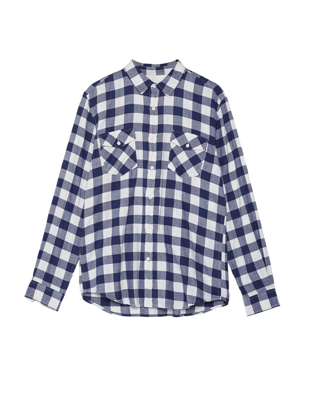

| Camisa cuadro damero bolsillos | Descripcion |
|---|---|
|  | Autenticidad es el sello que marca a Pull&Dog en cada uno de sus modelos originales. Innovando desde hace más de 150 años, siempre nos ofrecen lo mejor del mundo de la mezclilla y más allá. Jeans de estilo moderno con acabado whisker, costuras a detalle, cómodo y de suave textura |